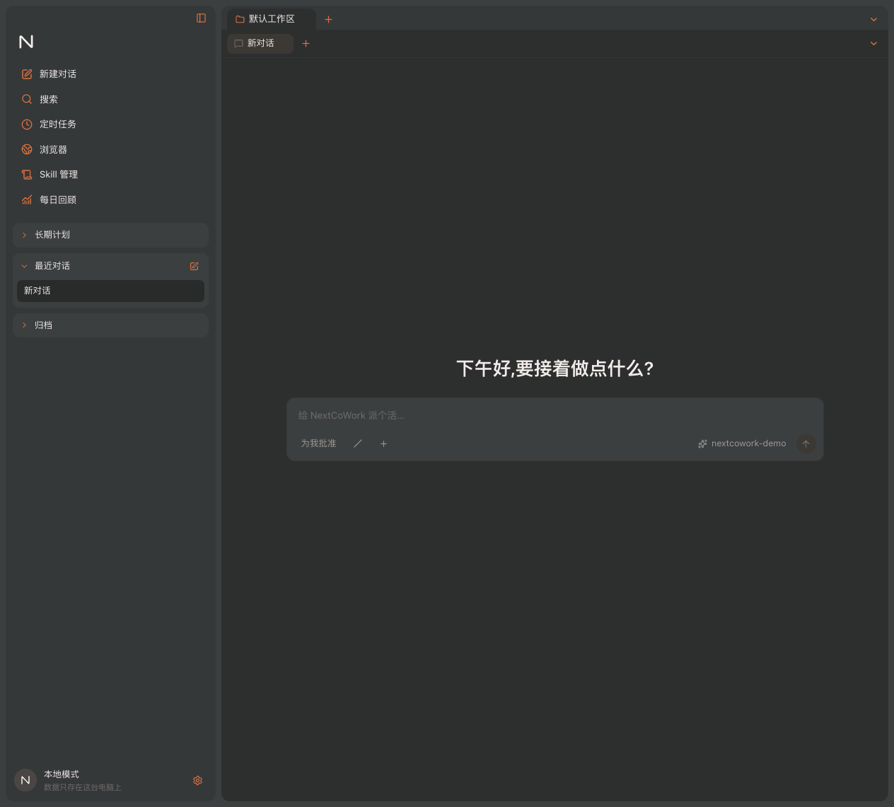
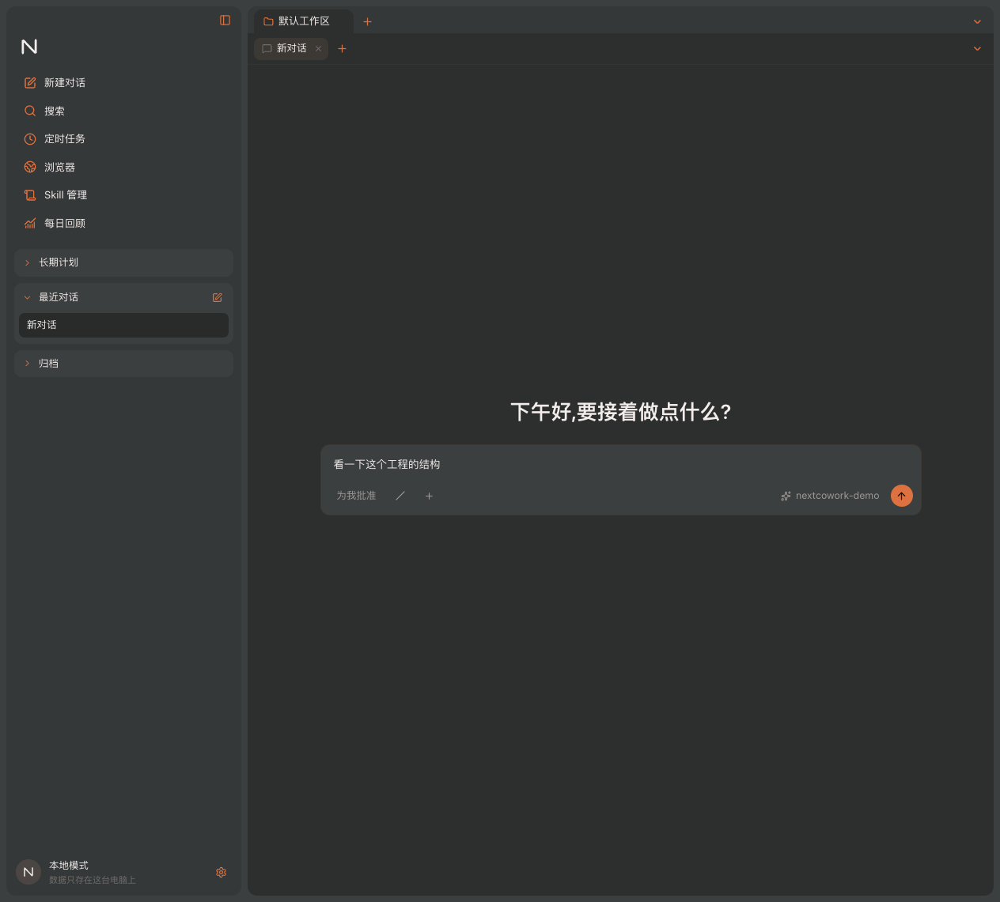
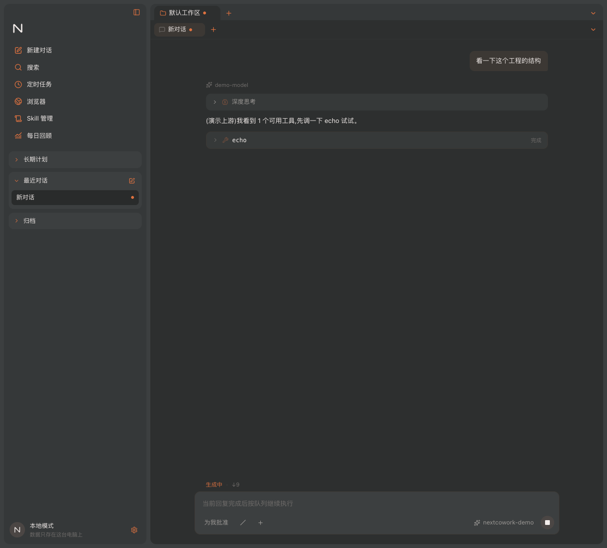
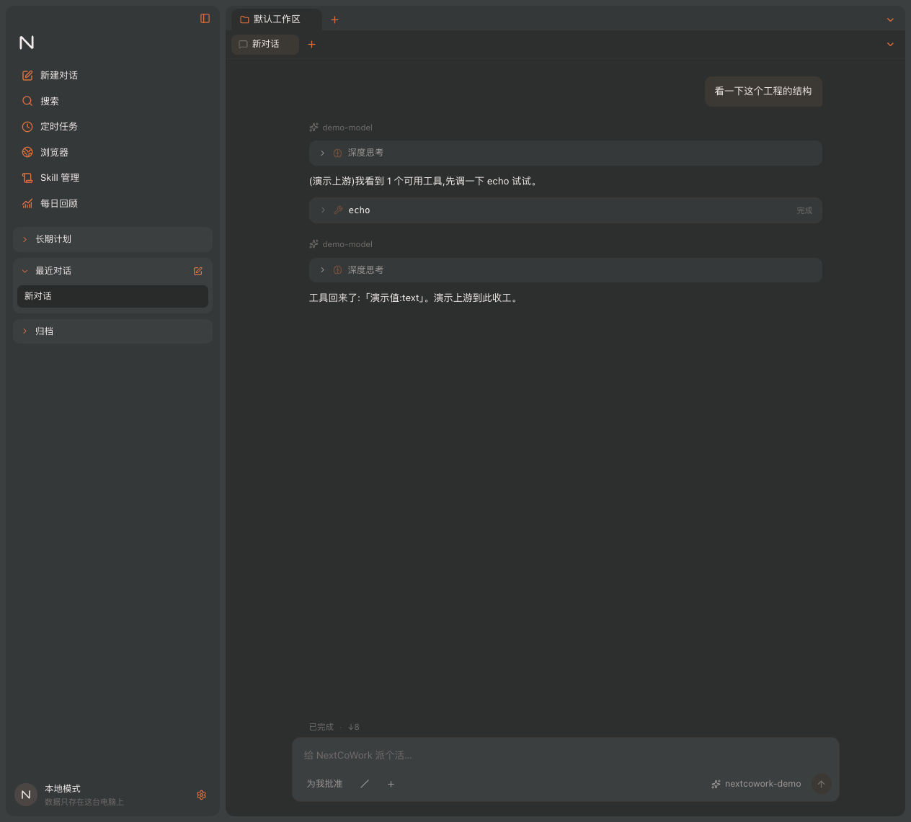
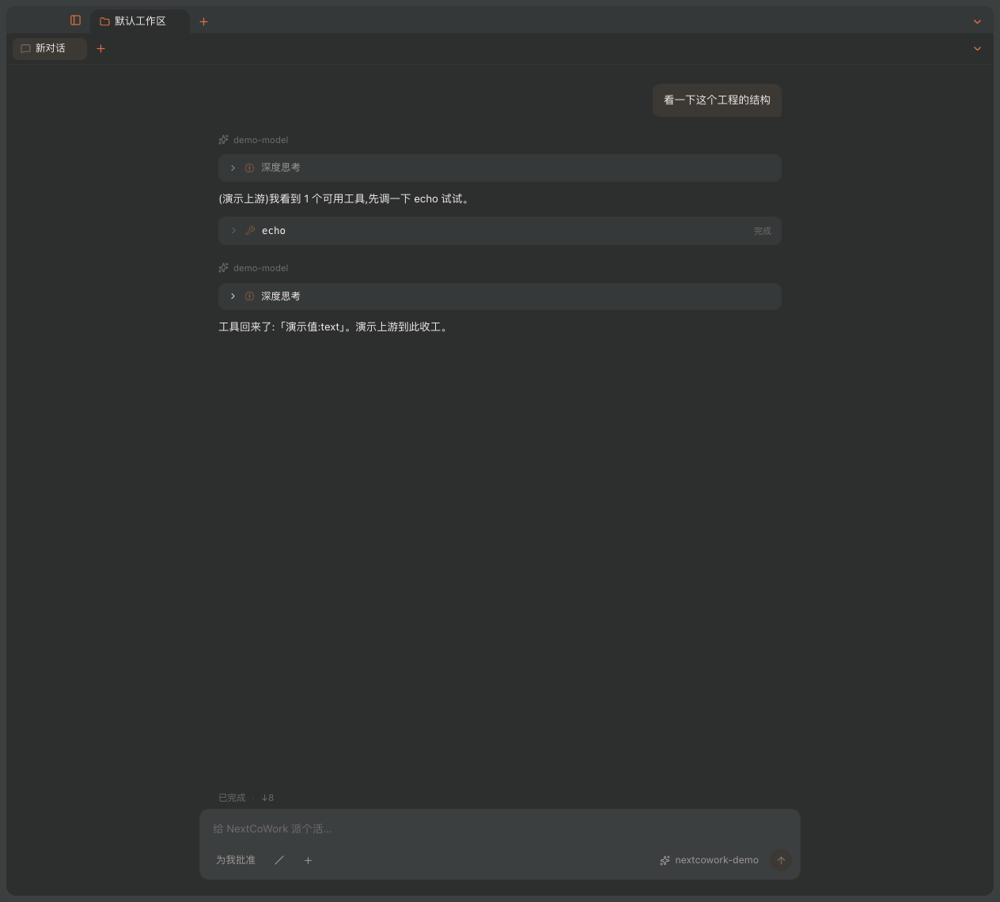

01
空会话 —— 界面上什么状态都不该有
居中的问候加一个输入框,输入框上方一片空白。参考截图在这一屏就是这样, 没有插画、没有状态行、没有「已完成」。

01-empty.png · 1264 × 1141 · 1×
参考实现是 NewMax v1.1.15 的 29 张界面截图。这一刀切的是工作区 + 双层 Tab + 对话视图外壳 —— 能发消息、能看见文字滚出来、能停下来。下面五张图不是设计稿,是从打包产物里截的。
Sequence
顺序是有意义的:同一个会话从空到有草稿、到生成中、到收尾。中间每一步界面该变什么、 不该变什么,是这次唯一能被验证的东西 —— 也正是三个 bug 露出来的地方。
居中的问候加一个输入框,输入框上方一片空白。参考截图在这一屏就是这样, 没有插画、没有状态行、没有「已完成」。

模型 pill 贴着发送键在右边,权限档位、/、+ 在左边。
这个左右分工是从参考里量出来的,初版做反了。

外层工作区 Tab、内层对话 Tab、侧边栏会话行各一颗,状态行是
生成中 · ↓9,发送键变成方形停止键,占位符换成
「当前回复完成后按队列继续执行」。

这一张是整组里最有用的:它证明角标真的收掉了。曾经这里是
已完成 旁边三颗圆点还亮着 —— 没有异常、没有测试变红,只是显示错了。

macOS 用 titleBarStyle: 'hiddenInset' 把红绿灯嵌进侧边栏,
折叠时那块区域不能跟着消失,否则按钮会压在内容上。

Measured
theme.css 的数这些不是挑的好看数值,是在截图上取的。颜色一栏值得单说:参考实现的中性色 不是暖米色,是偏冷的灰绿,只有边框和控件槽往橙色偏了一点 —— 照着调之后整个界面的气质才对上。
#454849#7f5944#2e3131 比画布还暗Found by looking
它们的共同点是不抛异常、不让任何测试变红,只是在屏幕上显示错的东西。 自动化门禁对这一类完全无感 —— 所以截图这一步不是交付物,是检查手段。
status,而它的初值恰好是 running。hasRun(transcript, running) —— 问「跑过没有」而不是「现在什么状态」,没跑过就整行不渲染。runIndex,输入框和状态行读会话自己的 activeRunId。摘除索引那一步只写在了启动失败的 catch 分支里 —— 于是只有失败的 run 会被摘掉,正常跑完的都留着。settleRun(),把两份一起收,applyEnvelope 和 applyEvents 两条路都走它。Found by grep
方案 §8 写着「per-session store 懒创建、工作区关闭时销毁」。 两个释放函数都写了,注释也写得很清楚,但全仓 grep 下来 生产代码里一次调用都没有 —— 只有一个测试碰过其中一个。 于是开过的每个工作区、每段转录都留在内存里直到退出应用。
更麻烦的是原来那版释放函数连运行中索引里的条目一起删。 真接上去反而会造出一个更难查的 bug:run 还在主进程好好跑着,渲染层却已经不认识它了, 事件泵按 runId 反查会话查不到,事件被静默丢弃 —— 重新打开工作区, 看到的是一段停在半路、而且再也不会动的转录。
修法是给释放加一道闸:正在跑的会话放不掉,而且判断依据必须是全局索引而不是某个 store 的字段 —— ⌘R 重载之后那个 store 压根还没被创建过,字段是空的,但 run 千真万确活着。 然后让关闭工作区那条路真的调用它。
这四条行为逐个做了变异测试:把修好的地方改回去,四个变异体全部被测试杀掉。 一个改坏了代码还能通过的测试等于没写。
Deltas
/、+ 归左。/ 是一整块面板:引导帮助、规划模式、目标模式、压缩上下文、MCP 服务器,外加一个带分类 chip 和「+ 创建 Skill」的 Skills 浏览器。我们现在是个占位。Your call
前面那些都有参考图可对,照着做就是了。下面这四件参考图给不出答案 —— 要么是截图里根本没有,要么是抄了会有别的问题。
29 张参考截图里,没有一张是对话生成到一半的。消息气泡、工具调用节点、 可折叠的「深度思考 N 秒」、子代理的展开节点 —— 这些的排版全是我按协议里的事件类型推的, 不是抄的。这是整个界面里最没有依据的一块,而它恰好是用户看得最久的一块。
方案里写了「深浅两套对等」,但参考截图我这边全是深色的。
theme.css 里那套浅色 token 是我按深色的角色关系反推出来的占位,
没有任何一处是量出来的。它现在能跑、不会瞎,但也仅此而已。
现在 Mark.tsx 里是一个占位的 N 字母字标。参考实现左上角那个 M
是 NewMax 的商标,不能照搬,连改一改都不行。
这是全项目唯一一处我没法自己解决的东西 —— 它需要的是一个决定,不是一段代码。
两件都能做,但都不便宜。窗口半透明要开
vibrancy 加透明背景,代价是所有面板底色都得重新验一遍对比度,
而且 Windows 上没有等价效果 —— 会变成一个平台一个样子。
整块斜杠面板牵着 SkillRegistry 和会话模式,那是步骤 12 和 14 的东西。